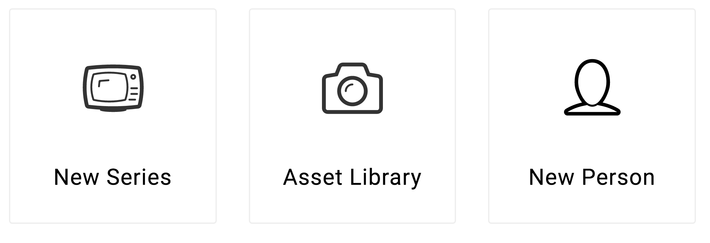

A system icon, or UI icon, symbolizes a command, file, device, or directory. System icons are also used to represent common actions such as remove, delete, and save.

Favorites Icons on the Dashboard